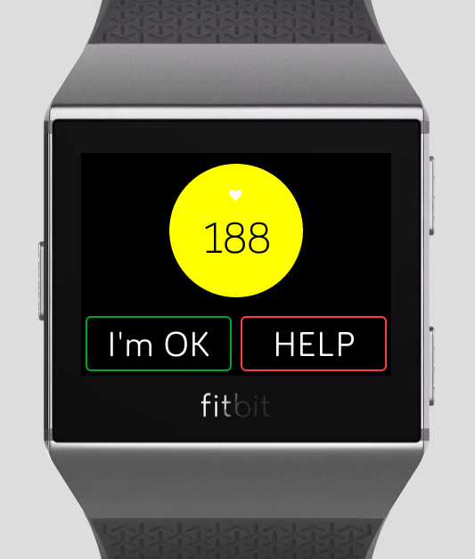
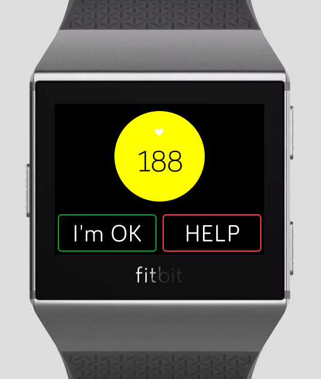
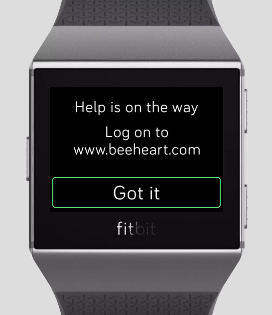
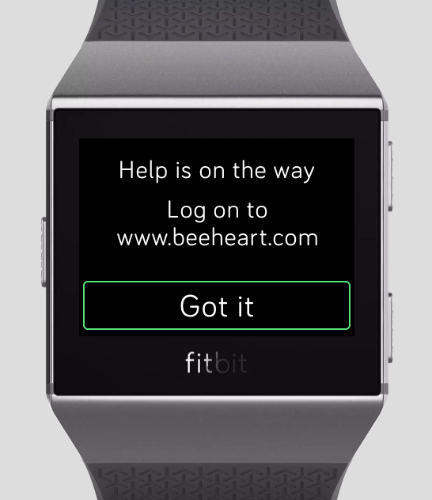

I wondered what unique challenges designing for a watch screen has because it was so small. Yet what surprised me was that basic Human Computer Interaction guidelines were still so applicable.

Heartbee was born at AngelHack San Francisco 2018 over the weekend of July 28-29, created together with my amazing teammates: Ami Zou (Software Engineer), Gabi Stein (Product Manager + Database Enginner), and Sophia Liu (Designer). Together we won three awards, including AngelHack's Code For A Cause Impact Award. During the hackathon, I primarily wore my engineering hat and developed the watch app part of the project, but I was also very intrigued by the product design.
The Product
Heartbee tracks senior users' heart rate real time using the Fitbit watch. If the heart rate increases above a danger threshold and meets certain conditions, we will notify the senior's family and friends immediately and enable online video chat via our paired web and iOS apps. Care for your loved ones, easy as can bee.
We created this seamless watch face with just two buttons. If everything is normal, the background will be green. If the heart rate goes near the danger threshold, the background will turn yellow as a warning. Currently we are using the formula (220 - user age) to calculate the danger threshold. Potentially we can come up with better and more customized algorithms. If the heart rate goes above the danger threshold, the background will turn red and the watch will start vibrating. Now if the user doesn't press the "I'm OK" button within 5 seconds, the watch will automatically notify the user's family and friends. If the user presses the "I'm OK" button, the watch will stop vibrating and cancel the notification. However, if the user isn't feeling well, he or she can press the "HELP" button at any time, and the watch will immediately send out notifications regardless of heart rate.
 


The Inspiration
I spent the summer of 2018 interning in San Francisco, and I rented a place in Chinatown. Almost as soon as I moved in, I was intrigued by the interesting community. More than 60% of the community are senior citizens, which means that many of them don't have children living with them to take care of them. Yet the community is thriving in its own ways. The seniors do their own grocery shoppings, socialize with each other by playing chess at a plaza, and even run small family businesses like authentic Chinese food restaurants.
Imagine that Madeline is a busy young professional living in the city, and her grandma lives alone in Chinatown. Madeline's grandma has high blood pressure and heart disease. Even though grandma doesn’t speak English, she’s stubbornly independent, loves to do things herself like grocery shop. A month ago, Madeline went to grandma's place for dinner. Madeline arrived, found grandma on the ground short of breath. She was suffering from a fast heart rate. Madeline wished she could have taken care of grandma during an emergency like this, but it’s not easy to check up on your elderly parents when they insist on living alone.
San Francisco Chinatown is full of elderly citizens like Madeline's grandma. Statistics show that more than 70% of them suffer from cardiovascular disease. We want to connect elderly parents and their family members in a way that doesn’t intrude on their independence, but make sure they’re being taken care of.
The Design
Before the hackathon I thought, "I've designed for PC and phone screens before, but never a watch screen. I wonder what unique challenges it has because it's so small!" Yet what surprised me was that basic Human Computer Interaction guidelines are still so applicable. Initially we were so focused on what happens on the family’s end after the senior user sends out help messages, that we forgot to give feedback on the senior’s end. Regardless of the screen size, if a user presses a button and the interface gives no feedback, it would be poor design. So I added a pop-up “take care” message that will show up after the user presses the “I’m OK” button and auto-disappears after three seconds. I also added a “help is on the way, log on to www.heartbee.com” message after the user presses the “help” button to reassure the user and inform them of the next step.
 
